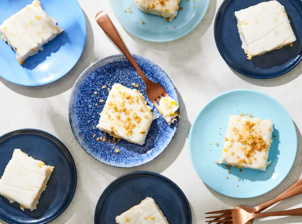

Maja Blanca
Home

Description
Maja blanca is a Filipino coconut pudding topped with kalik which is a
sweet, crumbly topping made from coconut milk. Serve this creamy delicacy
for dessert or as a snack.
Ingredients
Latik Toppings:
- 1 (14-ounce) can full-fat unsweetened coconut milk (5 - 20% fat)
Coconut Puddng:
- 1/2 cup white sugar
- 1/2 cup cornstarch
- 2 (14-ounce cans) unsweetened coconut cream
- 3/4 cup canned cream-style corn
- 1/4 cup fresh or frozen corn kernels (Optional)